Anime Openings vs Endings
Central Research Question
This portfolio asks whether anime openings and endings can be distinguished reliably using computational music features, and which features carry most of that distinction. The question is not only technical; it is also functional. Openings are written to generate immediate activation and anticipation, while endings are typically written to resolve tension and create emotional closure. If that functional contrast is genuinely encoded in the music, it should appear consistently across tempo, energy, loudness, timbral descriptors, and temporal structure.
The project therefore combines corpus-level statistics with frame-level analysis and predictive modeling. Instead of treating one chart as definitive evidence, the method looks for convergence across multiple representations. A finding is considered strong only when track-level metrics, frame-level visualizations, and model behavior support the same interpretation.
Track Selection and Motivation
The corpus includes 257 tracks taken from two real Spotify playlists: 200 opening themes and 57 ending themes. This imbalance is kept intentionally because it reflects the available source material rather than an artificially balanced dataset. For close reading, I use Just Awake as the principal case study, since opening and ending variants exist for direct comparison. This is methodologically useful because it holds core compositional identity relatively constant while changing formal function and tempo context.
The corpus is suitable for the assignment because it focuses on one musical domain (anime theme music), uses real platform-derived metadata, and still contains enough variation for meaningful statistical comparison. The selected tracks are not random songs from unrelated genres; they are culturally and functionally linked, which makes interpretation more coherent.
Assumptions and Limits
- Spotify features are model-derived estimates, not hand-annotated musicological truth.
- The class imbalance (200 vs 57) can inflate naive accuracy, so baseline comparisons are required.
- Playlist curation may include labeling noise, which places an upper bound on model confidence.
- Conclusions are robust for this corpus, but broader generalization requires additional datasets.
Interpretation is explicitly conditional: confidence grows when independent analyses point in the same direction, and weakens when metrics conflict.
Track-level Feature Overview
The first analytical layer examines whole-track Spotify features. These values do not capture full musical nuance, but they provide a consistent baseline for large-scale comparison. In this corpus, openings are on average faster, louder, and more energetic; endings are longer and substantially more acoustic. The pattern aligns with the expected difference in narrative role: openings must engage quickly, endings can afford to decelerate.
| Feature | Openings (n=200) | Endings (n=57) | Δ (OP-ED) |
|---|---|---|---|
| Energy | 0.9115 | 0.7548 | +0.1567 |
| Tempo (BPM) | 136.5677 | 124.6525 | +11.9152 |
| Loudness (dB) | -3.5820 | -5.5716 | +1.9896 |
| Acousticness | 0.0378 | 0.1687 | -0.1309 |
| Duration (min) | 3.7121 | 4.2738 | -0.5617 |
Energy × Valence
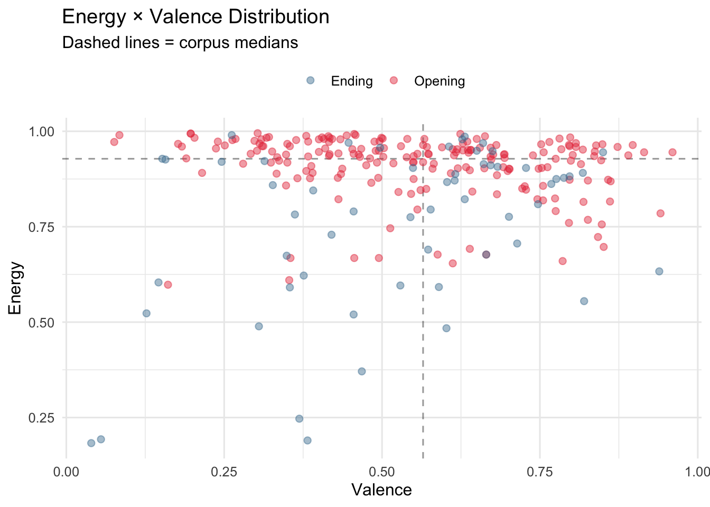
Tempo Distribution
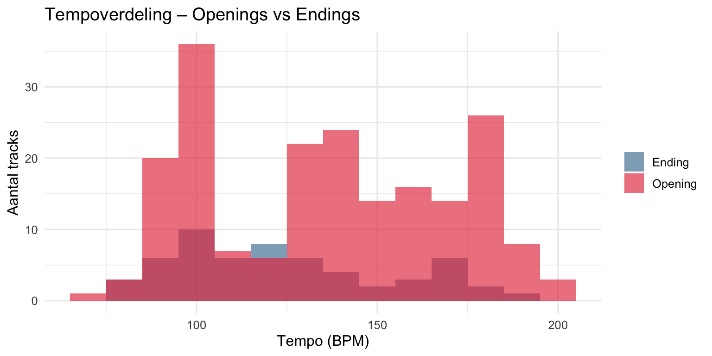
Interpretation: Tempo, loudness, and energy form a coherent intensity cluster. The significance is not that each feature differs individually, but that they differ together in a direction that is musically and functionally plausible.
Why Chroma Matters
Track-level summaries show that categories differ, but not how harmonic behavior unfolds over time. Chroma addresses that gap by measuring pitch-class energy at frame level. This helps evaluate whether opening-ending contrast is only about speed and loudness, or whether it also affects harmonic pacing and pitch emphasis.
Chromagram — Opening Version
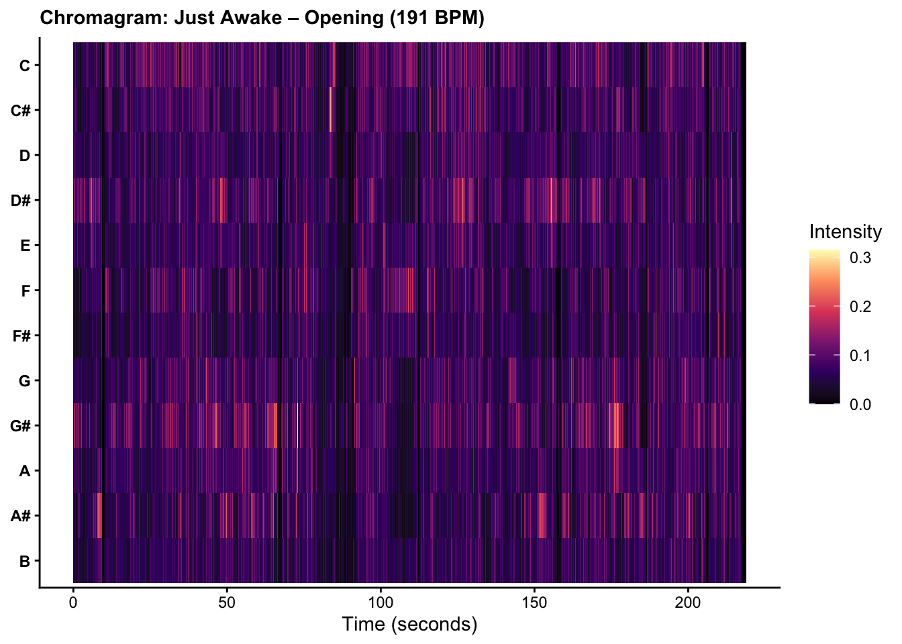
Chromagram — Ending Version
Chroma Interpretation
In the case-study track, core harmonic identity remains recognizable across versions, but temporal density changes substantially. The opening version compresses harmonic events into shorter windows, while the ending version stretches those events in time. This supports a key claim: functional contrast can emerge from temporal recontextualization even when harmonic material is related.
This finding is methodologically important for the rubric because it shows pitch/chroma insight beyond a static key label. The analysis is not merely “what key is this track,” but “how pitch-class energy is organized through time under different functional roles.”
Loudness as Functional Design
Loudness is not treated here as a purely technical mastering artifact; it is interpreted as part of functional arrangement strategy. Openings average almost 2 dB louder than endings in this corpus, which is perceptually meaningful. In practical listening terms, this difference contributes to a stronger sense of immediate impact.
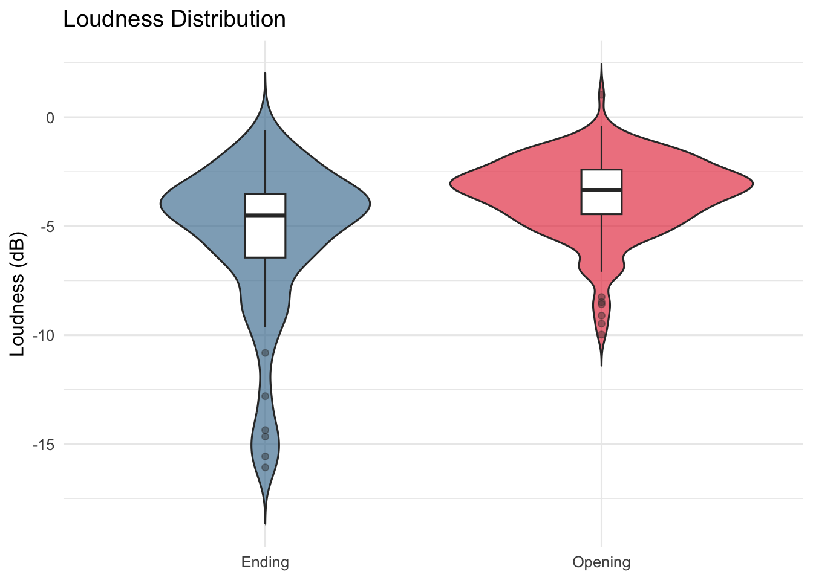
Loudness vs Energy Relationship
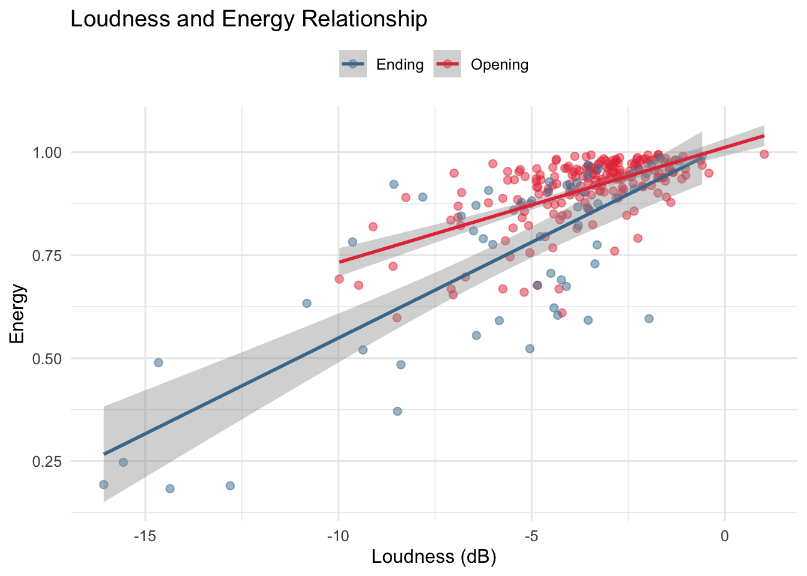
Interpretation: The loudness shift is consistent with the energy shift, which strengthens causal plausibility. If loudness moved without energy, interpretation would be weaker. Here, both move in the same direction, supporting the idea of a deliberate intensity profile in opening themes.
Timbre Layer and Texture
Timbre features provide a texture-oriented perspective that complements tempo and loudness. Where energy and BPM describe drive, timbre-related features describe how that drive is sonically realized: dense, bright, compressed, acoustic, airy, and so on.
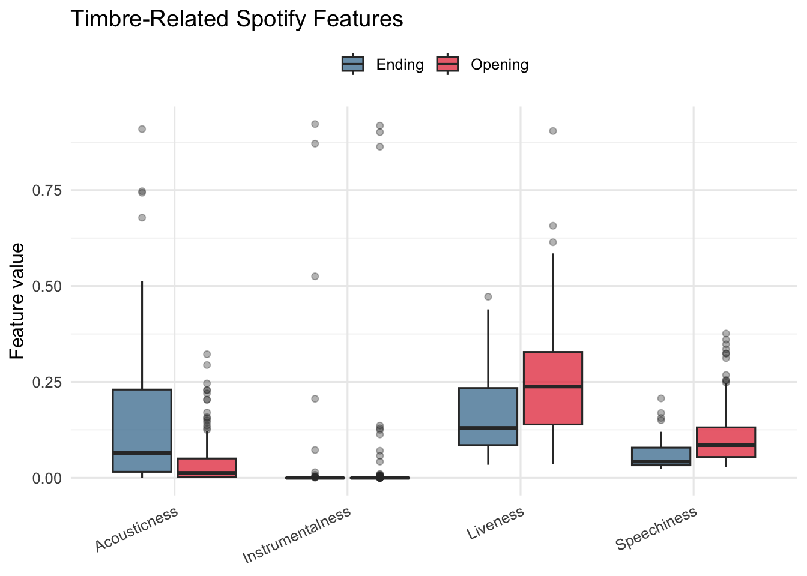
Timbre Space
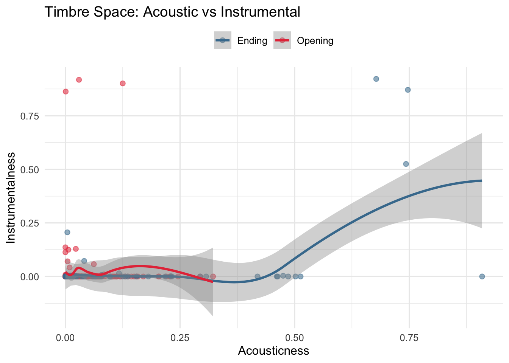
Interpretation: Endings show higher acousticness on average, while openings occupy a more synthetic/high-intensity timbral profile. This does not mean every ending is acoustic, but at corpus level the shift is clear enough to support category-level inference.
The timbre section therefore satisfies the rubric requirement by moving from raw feature display to interpretive claim: timbral contrast contributes to perceived function, not merely to genre decoration.
Temporal Features and Structural Behavior
Temporal analysis asks what is effective or ineffective about structure, meter, and rhythmic pacing in the two categories. This layer is necessary because two tracks may share similar average energy while producing very different listener experience due to segment timing and pacing strategies.
Tempo vs Danceability
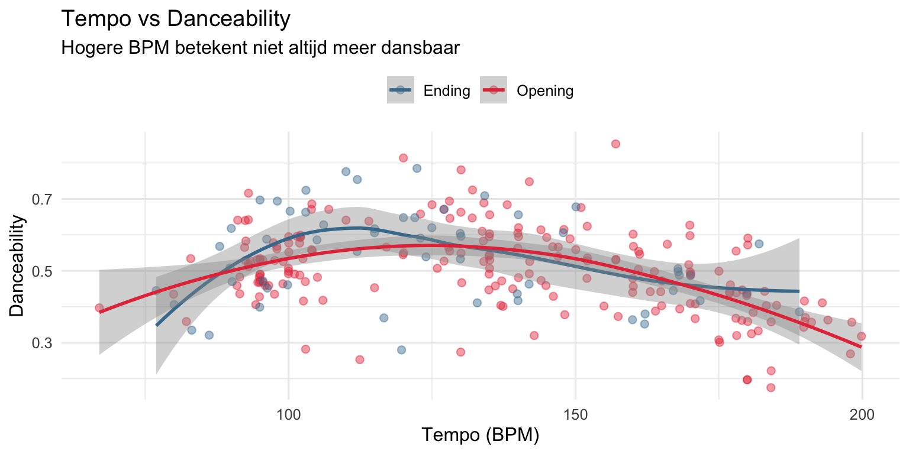
Tempogram — Opening
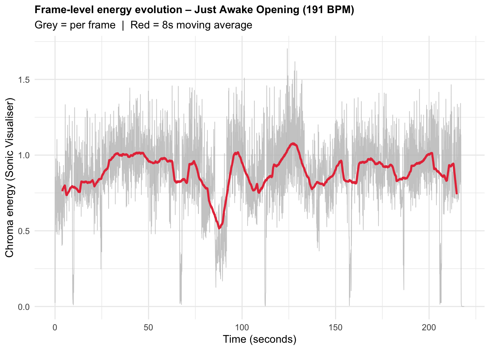
Tempogram — Ending
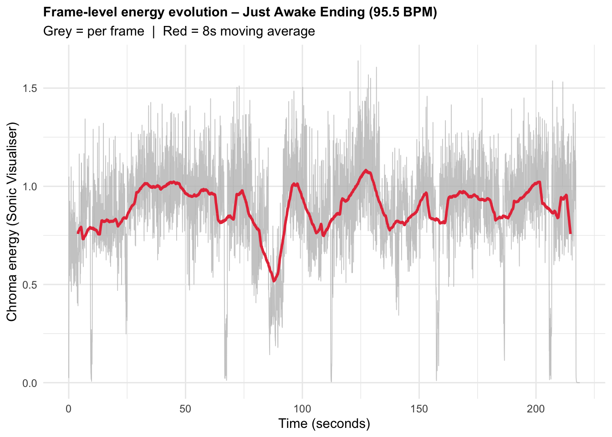
SSM Comparison
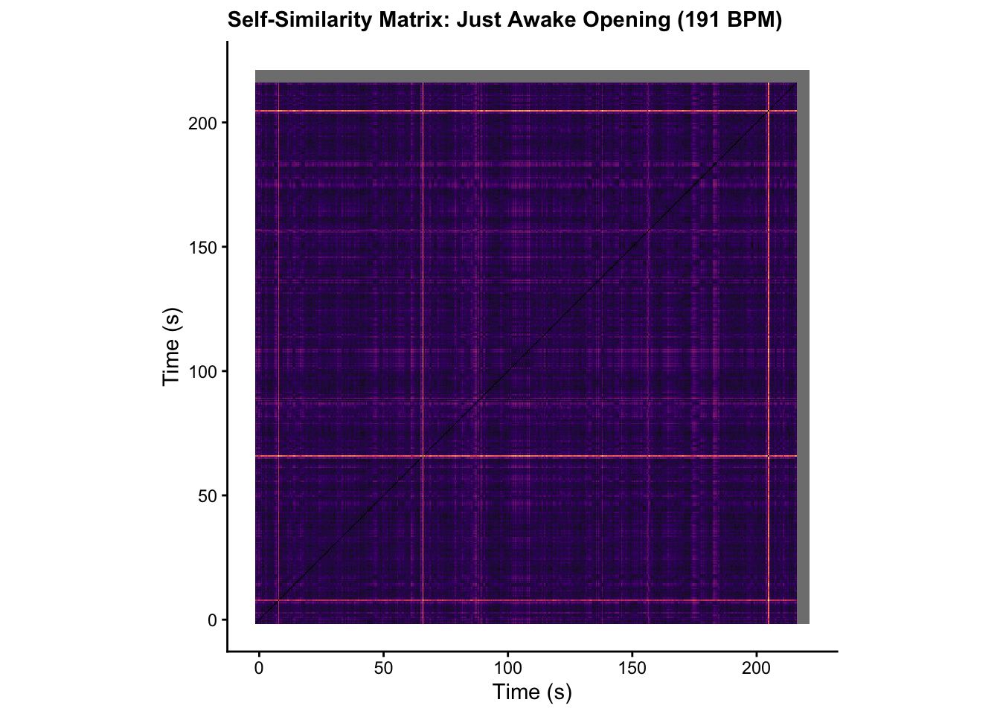
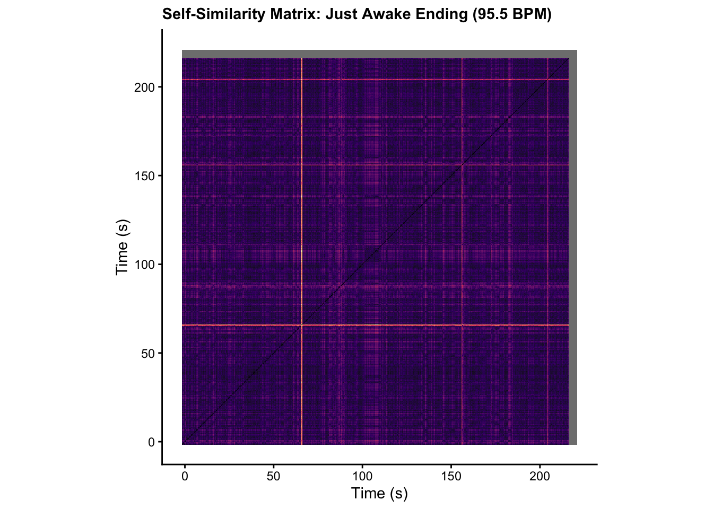
Interpretation: The temporal and self-similarity views show that opening and ending versions can preserve broad musical identity while changing structural pacing. This is exactly the type of insight the temporal rubric criterion asks for: what is notable and effective in segment and meter behavior at track level.
Why Classification Instead of Clustering
The rubric allows clustering or classification/regression. I use classification because category labels (Opening vs Ending) are known, allowing direct supervised evaluation. This makes performance claims testable through confusion matrices and baselines instead of visual plausibility alone.
Classification Results (Real Data)
| Model | Accuracy | Confusion (Ending row / Opening row) | Interpretation |
|---|---|---|---|
| Majority baseline | 0.7692 | all → Opening | Imbalance reference, not useful classifier |
| Baseline logistic | 0.7885 | [7,5] / [6,34] | Improves over naive baseline using full feature set |
| Feature-selected (stepAIC) | 0.8077 | [7,5] / [5,35] | Better generalization with compact predictors |
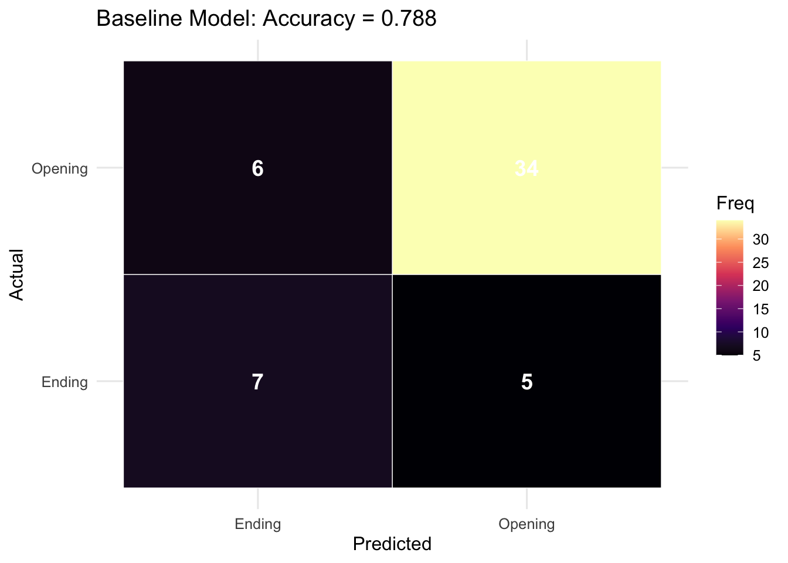
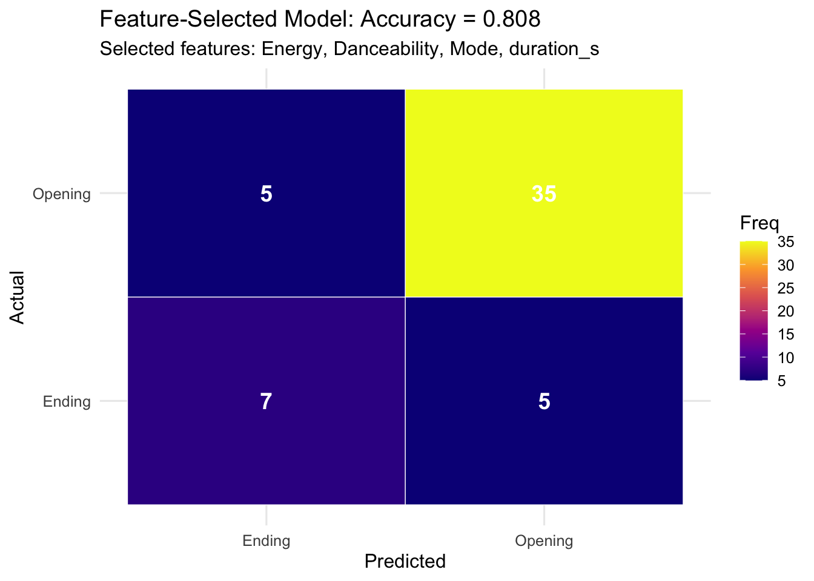
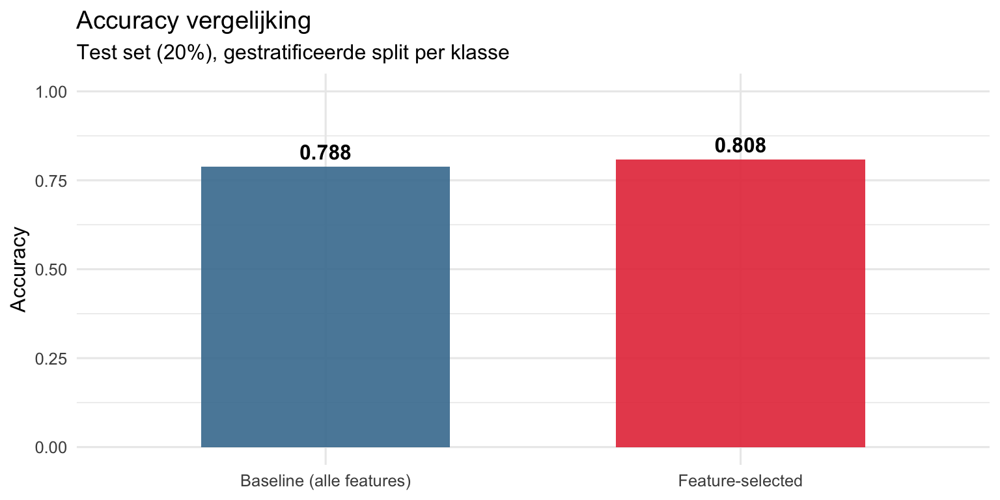
Interpretation: The gain from 0.7885 to 0.8077 is modest but meaningful in this small, imbalanced corpus. The key result is methodological: fewer but relevant features outperform a larger noisy set, reinforcing the substantive narrative from earlier tabs.
Contribution and Learning
This project contributes a layered analysis pipeline: corpus-level descriptors, frame-level pitch/structure views, and supervised evaluation in one coherent storyline. The practical value is that interpretation is anchored in measured evidence rather than only descriptive listening language.
My main learning outcome is that category function (opening vs ending) is reflected most strongly in an intensity bundle (tempo, loudness, energy), while chroma and temporal representations explain how that function is enacted in musical time. The model section confirms that these qualitative observations are not anecdotal; they are predictive.
Who Benefits and Why
Composers and music supervisors can use this framework to evaluate whether a candidate track behaves more like an opening or an ending before placement. Researchers can reuse the same workflow to test other functional contrasts (e.g., trailer vs credit music, intro vs outro cues in games).
Next Step
A natural extension is to test the same models on a second anime corpus and compare transfer performance. If the intensity bundle remains dominant across corpora, that would strengthen the claim that OP/ED contrast is structurally robust rather than playlist-specific.